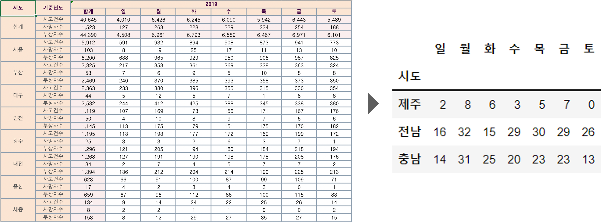
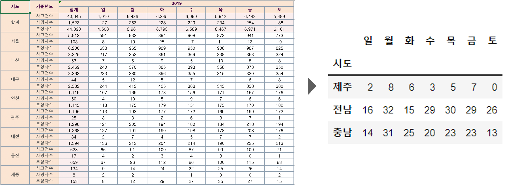

연령대별 사상자수 대비 사망자 비율의 그래프를 보면 부상자와 사망자수를 모두 합한 사상자와 사망자를 비교했을 때 65세 이상의 비율이 가장 높게 나왔습니다.
연령층별로 나누어 비교했을 때에도 노인층 사상자수 대비 사망자수는 청장년층 대비 약 5배, 유아청소년층 대비 약 8배로 나타나 노인층의 교통사고 사망자 비율이 월등히 높은 것을 확인할 수 있습니다.
전국 기준 노인 인구 10만 명 당 사망자 수가 가장 높은 제주, 충남, 전남의 차대사람 사고유형 발생 건수를 구해본 결과 사망 발생 건 수가 가장 높은 사고유형은 횡단중의 비율이 가장 높았습니다.
횡단 중은 무단횡단을 포함하여 횡단하는 과정에서 발생하는 사망사고를 포함합니다. 그 다음으로 기타에서 가장 높은 교통사고 사망 발생건수가 나온 걸 확인 할 수 있었습니다.
기타는 횡단중/차도통행중/길가장자리구역통행중/보도통행중을 제외한 사망사고에 해당합니다.
지역별 노인인구 비율과 10만명당 노인 교통사고 사망자수를 비교한 그래프를 보시겠습니다.
지역별 노인인구비율은 전남이 22.6%로 가장 높지만, 10만명당 노인사망자수 비율이 가장 높은 지역은 ‘제주‘,’충남’,’전남‘순으로 나타났습니다.
특히 이 그래프에서 눈 여겨 봐야할 점인 ‘제주‘는 전체 인구대비 노인비율이 약 15%나타났고 10만명당 노인사망자수는 17명으로 다른 시도별과 달리 노인인구비율보다 10만명당 노인교통사망자수가 더 높은 수치로 나타났음을 알 수 있었습니다.
그러나 ‘제주’는 섬지형으로 제주만의 특성이 상대적으로 강할거라 짐작하여 조사해본 결과 통계청의 데이터에 따르면 2019년 제주 1인당 자동차 보유수는 약 0.9대로 나타났습니다. 이는 전국 평균인 0.45대 보다 2배 가까이 차이가 나는 수치로서 제주도 노인인구는 적지만 높은 자동차 보유수로 인한 교통량증가가 사고 발생을 유발하는 이유 중 하나로 추측해 볼 수 있었습니다.
그러하여 추가적으로 육지이자 차 순위인 ‘충남‘과 ‘전남’ 노인 교통사고사망현황을 함께 분석해보았습니다.
지역별 노인교통사고 사망자수와 연관해서 생각해볼 요소로 세 개 지역의 응급실현황을 분석해봤습니다.
그 결과 응급실이 있는 병원의 개수는 전남 23곳, 충남 13곳, 제주 6곳으로 나타났습니다.
요일별 노인 교통사고 사망자수 시각화를 확인하면 노인 교통사고 사망자수는 제주, 전남, 충남 모두 월요일에 가장 높은 사망자수를 기록했습니다.
월별 노인 교통사고 사망자수 시각화를 확인하면 제주는 3월, 전남과 충남은 10월에 가장 높은 사망자수를 기록했습니다.
시간대별 노인 교통사고 사망자수 시각화를 확인하면 제주는 오전 6시와 10시 사이에, 전남 충남은 저녁 6시와 8시에 가장 높은 사망자수를 기록했습니다.
제주의 경우 사고다발 지역과 응급실 간의 최소 거리는 200m, 최대 거리는 2.7km 사이에서 사고가 나타난 것을 확인하였습니다.
내륙에 있는 두 지역을 더해 비교했을 때 전남과 충남의 응급실 거리는 사고다발지역과 거리가 있다는 점을 알 수 있었습니다.
예를 들면 전남은 진도읍, 충남은 서천읍이 응급실과 가장 멉니다.
 



.png)